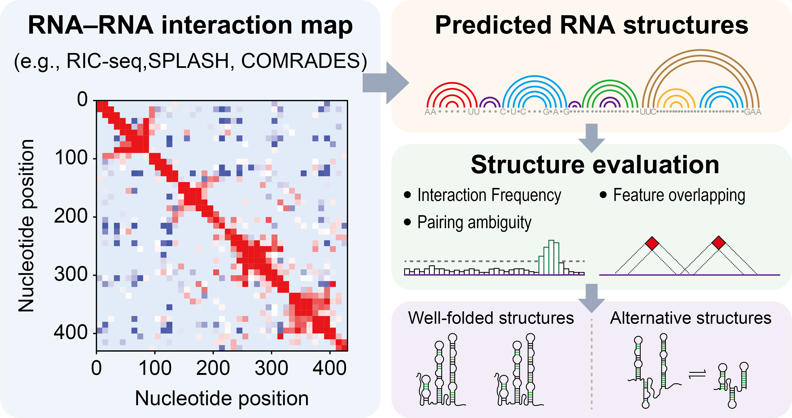

Genome-wide representative
Full-length models assembled from high-scoring, non-conflicting stems; unconstrained regions are completed by MFE folding.
one model per datasetCOMPANION RESOURCE TO THE RIVER STUDY
RIVER Atlas collects every structure that RIVER inferred from nine published coronavirus proximity-ligation datasets: representative secondary structures, well-folded structures and mutually exclusive alternative structures. Each structure carries interaction support, pairing ambiguity and evolutionary conservation scores, and can be viewed on its RNA–RNA interaction map and downloaded.

ATLAS AT A GLANCE
Every dataset was processed with the same RIVER pipeline, so structures and attributes can be compared across viruses and experimental methods.
WHAT THE ATLAS CONTAINS
All categories derive from the duplex-associated structural features that RIVER localizes in each interaction map, so they can be compared side by side on the same heatmap.
Full-length models assembled from high-scoring, non-conflicting stems; unconstrained regions are completed by MFE folding.
one model per datasetRepresentative structures reconstructed separately for each duplex-associated feature in the interaction map.
one per structural featureFeature-level structures with interaction support above, and pairing ambiguity below, the background mean.
short- and long-range evaluated separatelyStructural units cut from genome-wide models, clustered by support, ambiguity and length (Ward's method); passing clusters are kept.
unit-basedGroups of mutually exclusive features in high-entropy regions with sufficient support (≥ 50th percentile), reconstructed as alternatives.
classified into Types I–IVSTART EXPLORING
Page state is kept in the URL, so filtered tables and views can be shared directly.
HOW THE STRUCTURES WERE INFERRED
RIVER first uses anti-diagonal duplex morphology to select structural signals, then resolves base pairs within them, rather than using interactions only as folding spectrum constraints.
A modified Canny edge detector finds the anti-diagonal signals that duplexes produce in the interaction map, across multiple resolutions.
Each candidate base pair inside a feature is scored by combining interaction support with its thermodynamic pairing probability.
High-scoring, non-conflicting stems are fixed as constraints; the remaining regions are completed by minimum-free-energy folding.
Attributes computed from the same maps identify well-folded structures and mutually exclusive alternatives.
Normalized interaction signal between the two paired nucleotides, summed or averaged per structure. Higher = stronger experimental evidence.
PA(i,j) = Hi × Hj
H is the interaction-derived Shannon entropy of each nucleotide. Lower = more specific pairing partners.
Mean over non-redundant homologous genomes: 1 = conserved, 0.5 = partially conserved (a different pair at the same position), 0 = absent.
Interaction frequency decays with distance, so the two spaces are scored separately; the cutoff sits near the knee of the chimeric-read distance profile.
ALTERNATIVE STRUCTURES
Across datasets and genera, mutually exclusive structures fall into four types.
Structure AStructure BShared formation region
DATA, CODE AND CITATION
Dataset provenance, file formats, citation and software repositories each have their own page.